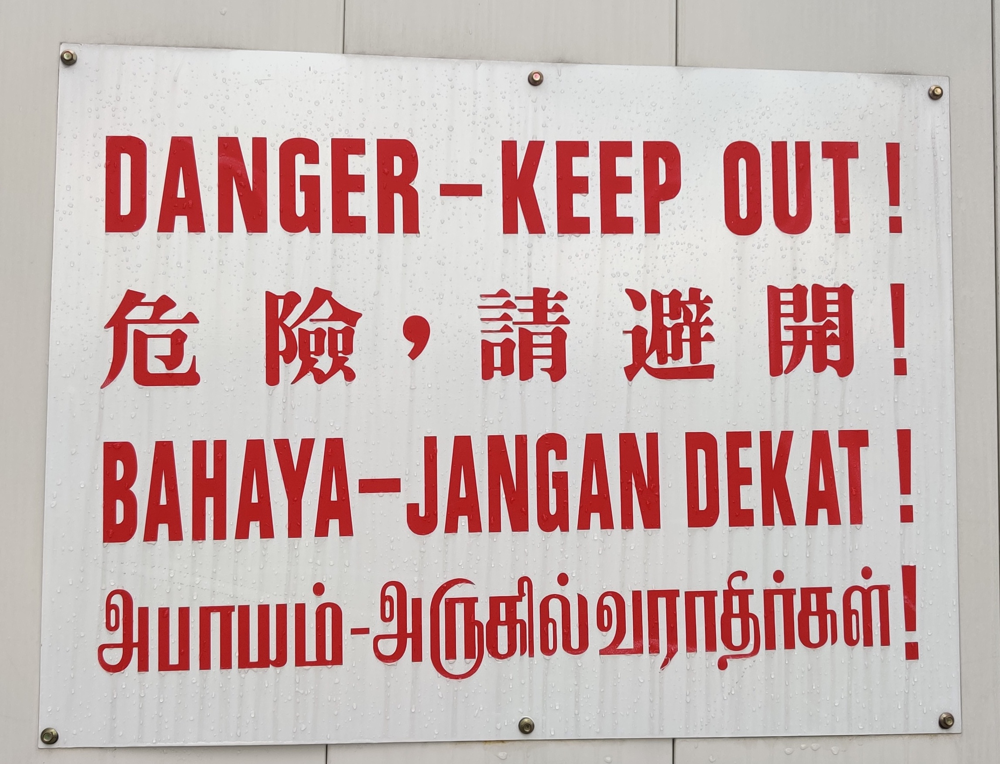
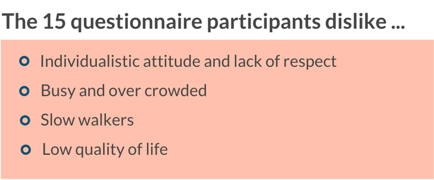
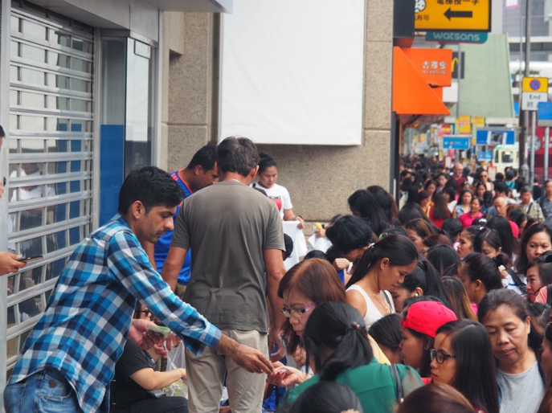
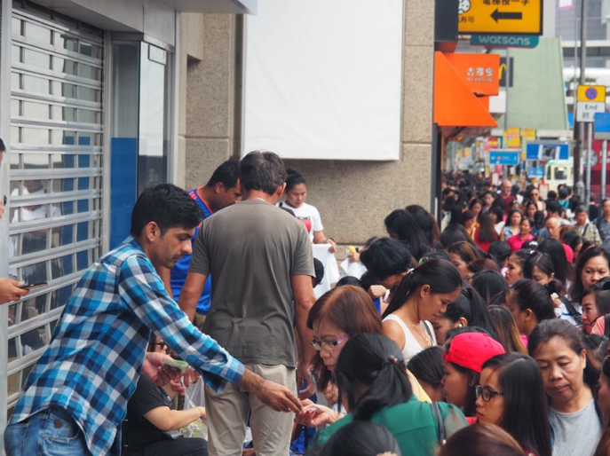

Identity dilemma of an American after living in Hong Kong for 9 years
Michael Robinson, lecturer at the Academy of Film of Hong Kong Baptist University, has resided in Hong Kong over 9 years. Worked as a freelancer with a master degree in 2008, while financial crisis hitting in, he decided to change
his life after the unpleasant divorce of his first marriage. Starting off his day with sending tens of job applications worldwide at that period, he received a call inviting him to teach in Asia one day and so he did.

(Michael Robinson, lecturer at Hong Kong Baptist University, sitting in his office when having no class.)
Hong Kong felt like New York to him, with vertical skyscrapers and fast-paced lifestyle. He currently lived on Lamma Island now with his wife and two kids. For him, Lamma Island is an integrated community despite several conflicts have aroused after the
escalation of anti-extradition bill protest.
When Michael first came to Hong Kong, he had no idea about Asia. But all his concerns were soon resolved as he saw quite a considerable proportion of the advertisements in Hong Kong are featured by Caucasian faces. He felt the place resembled home but
also strange.
Back in America, they need to ponder over the skin color of characters in the advertisements to avoid racism. ‘An estimate of 20% of the posters are white faces but we, the Caucasians, are actually not 20% of the population.’ Michael doubted why he couldn’t
see any Southeast Asian face on advertisements or MTR posters even though Southeast Asian are statistically equal to or even more than the white in population.
The feeling of leaving certain groups of people out made Michael feel uncomfortable sometimes. But Michael found it hard to judge whether Hong Kong is an integrated society from his position as he benefited from the privilege brought by his ethnicity,
though sometimes in an alienated etiquette. People normally treat him in a polite way seeing his Caucasian face. Despite his living in current neighborhood for 5 years, the grocery store downstairs still treats him like a foreigner.
Michael started to struggle when thinking about his identity. Living in Hong Kong for nearly 10 years, Michael was hesitated to define himself as American as he could not identify the popular American culture and does not feel the ownership in USA. But
he didn’t regard himself as Hong Konger as well.
Language is the main barrier preventing him from more interaction with the local Chinese. Not speaking Cantonese is a tremendous disadvantage for him as he could not read what his students were thinking when they suddenly all speak in Chinese.
The awkwardness also occurs when his wife’s Chinese family switch into Chinese during family gathering. From his experience of his Cantonese pronunciation getting teased but not taught at family gathering, he felt Hong Kong people have no spirit of helping
other people to learn their culture and became aware that he could never be a Hong Konger even though he might live here to death.
But he also sees good side from the barrier as he felt no pressure to adapt to the culture. His motherland, America, is called melting pot, as people will be considered as American as long as they have lived there for a while. But he pointed out the melting
pot only melts in one way, forcing people to assimilate into the society under pressure. Thus, he is glad that he does not to deal with the pressure in Hong Kong as people are not forced to integrate.
However, his living habits have adapted to some extent within 9 years. For example, Michael felt more comfortable using chopsticks and even unfamiliar with forks and knives sometimes.‘That’s the moment when I feel I may be a Hong Konger,’ he joked.
Young EM workers frustrated with this city and planning to move out
As a former inbound exchange student studying at Hong Kong Baptist University(HKBU) back in 2010, Juventius determined to return to Hong Kong in 2015 to work as a university staff supporting ethnic minority students in HKBU. But recently
he has made up his mind to move to Singapore for further MBA study.
Always mentioned as twins in Asia, Hong Kong and Singapore compete fiercely over years on account of their similar geographic location, economic status, social composition and also the multiculturalism.
Singapore is a multiracial and multicultural country with three major ethnic groups, Chinese, Malay and Indian. In order to cater to different races, Singapore government made English, Mandarin, Malay and Tamil as their official and equal languages, applied
in parliament and taught in schools.
(Ethnic Chinese is dominant ethnic group in Singapore and Chinese population has increased significantly from 1957 to 2018.
In 1966, the Singapore government implemented bilingual policy, encouraging Singaporeans to be proficient in both English and their respective ethnic mother tongues as Lee Kwan Yew, the first prime minister of Singapore, regarded connecting different
ethnicity groups as his mission and proposed the policy. However, the effectiveness of the policy has also been questioned by some people as it may lead to deficiency in both languages and deeper racial divisions.
Juventius interpreted the implementation of bilingual language policy in Hong Kong as the recognition of identity, which cannot be achieved in Hong Kong. “Hong Kong government will never make Tamil its official language though the Indian have been living
and contributing to Hong Kong for over 50 years,” he added.

(A road sign in Singapore, written in all official languages, English, Chinese, Malay and Tamil. Such quadrilingual sign is commonly seen in Singapore.)
Juventius felt Hong Kong has changed in many ways compared to 10 years ago. “It used to be more integrated. The sentiment towards mainland people and the ignorance of ethnic minorities used not to be this severe.”
He recalled the time when he returned to Hong Kong and wanted to open a bank account, the bank clerk asked directly if he was a domestic helper after noticing he was Indonesian. He felt the stereotype unacceptable but also determined to serve the ethnic
minority community more, but later when he realized Indonesian cannot be respected as they deserve, he decided to leave Hong Kong for Singapore.
He believed Hong Kong people should endeavor to actively embrace other culture and be more culturally sensitive instead of waiting for others to adapt. Comparing the situation of EM urging for cultural integration in Hong Kong to an example of boys chasing
after girls, Juventius said. “Even if boys are chasing hard, they have to ensure that the girls have a willingness. If the girls show no interest, boys may just give up and move out like me.”
His friend, Niko Solidum, an Indonesian employee in JP Morgan Hong Kong, is also not satisfied with the cultural segregation in Hong Kong.
Niko has been working in Hong Kong industry for 3 and a half year. Graduated from Manila University in 2011 and having working in financial industry ever since then, he became the first candidate for Manual Life Asset Management Investment Trainee Program
in the Philippines. He was assigned to Hong Kong for the last six months of the trainee program and decided to stay here after receiving the permanent job offer in this renowned financial hub.
“This is a place hard to chill but the public infrastructure and urban planning is really convenient,” Niko enjoyed his life now and managed to play badminton with his friends regularly when off work.
Niko’s team consists of 7 people, including him, an American Taiwanese, a Hong Kong Australian and other local Chinese.
The work norm confused Niko from day one as it is different from the Philippines. His office in Hong Kong is quiet of the most time, which is different from the office full of chatting and laughter back in the Philippines.
Living a typical expat lifestyle in Hong Kong, Niko hangs out with expats more. “I have no ‘local local’ friend here.” He created the term ‘local local’ to refer to the local Chinese growing up their entire lives in Hong Kong. “All my local friends have
studied abroad. The differences between them and ‘local local’ are obvious. Those who have lived abroad are more open-minded and more outgoing”, he added.
Encountering South Asian face stigma often, Niko feels Hong Kong a materialism and white supremacism place. For several times on the dating app, after telling the matched partner he is from the Philippines, he received no reply forever.
Among the 15 replies to the questionnaire conducted by the author regarding foreigners’ perception on Hong Kong, 4 participants show their dislike towards some people’s attitude in Hong Kong as Niko does.

(Five out of fifteen participants dislike the bad attitude and lack of respect shown by Hong Kong people.)
Niko admitted sometimes feeling annoyed to be labelled as uneducated and unemployed because of his nationality but he insisted that he would never try to live a comfortable life through denying himself as a Filipino. “The label and stereotype culture
in Hong Kong bothered me but I don’t want to live comfortably through denying myself,” he said.
And he felt happy that his fellow Filipinos could work in Hong Kong to support their families, regardless of the occupation.


 
